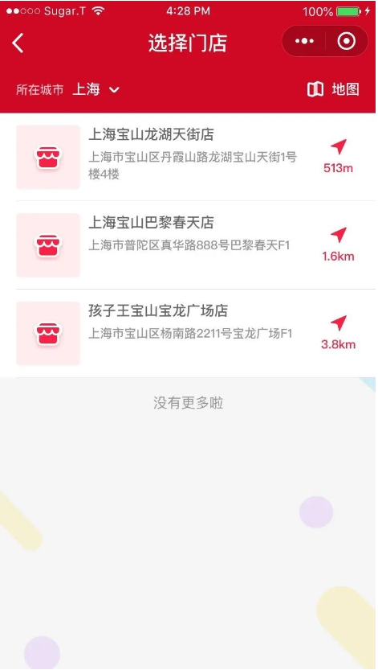
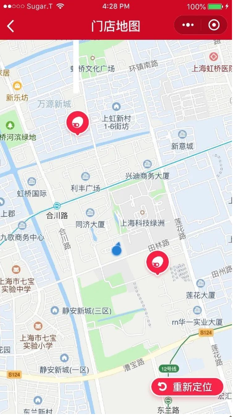

Nearby Stores for Local Shopping
Main features


Automatically locate stores around customers residence based on GPS location, and arrange them from nearest to farthest based on distance.
View more features ...
Project Overview
The "Nearby Stores For Local Shopping" combines online and offline experiences, allowing users to visit physical stores to try out products and then place orders online. This offers a more convenient way for users to find and purchase products that meet their preferences.
Role and Responsibilities
- Developed a distance-based sorting feature, allowing users to effortlessly filter nearby Bricks Store locations from closest to farthest.
- Created an intuitive user interface for browsing product details, facilitating quick identification of desired LEGO products available in nearby stores.
- Designed the online ordering system, enabling users to seamlessly place orders for their preferred products through the mini program.
- Integrated a logistics tracking feature, enabling users to query the real-time delivery progress of their orders and set up timely reminders for package acceptance.
- Implemented security measures to protect user data and financial transactions during online payments.
Technologies and Tools Used
- Back-end: PHP, D, MySQL, Redis
- Version Control: Git
Project Challenges and Solutions
- Challenge: Geolocation Accuracy.
- Solution: Implemented a combination of GPS and Wi-Fi positioning systems, designing a calculation method based on latitude and longitude coordinates to determine the distances to nearby stores, and then utilizing map APIs to mark these stores on the map. .
- Challenge: Preventing Inventory Overselling.
- Solution: Implemented concurrency control mechanisms to handle simultaneous purchases of the same product. This prevented multiple customers from purchasing the last available item simultaneously.
- Challenge:Logistics Tracking Integration.
- Solution: Integrating third-party logistics tracking APIs to provide users with real-time delivery updates required overcoming compatibility and data synchronization issues.
- Challenge: Performance Optimization
- Solution: Employed a combination of lazy loading, image optimization, and code profiling techniques to enhance the program's performance.